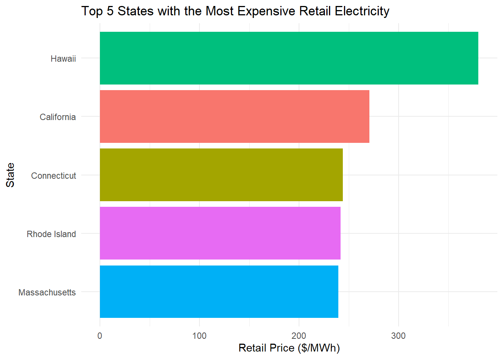
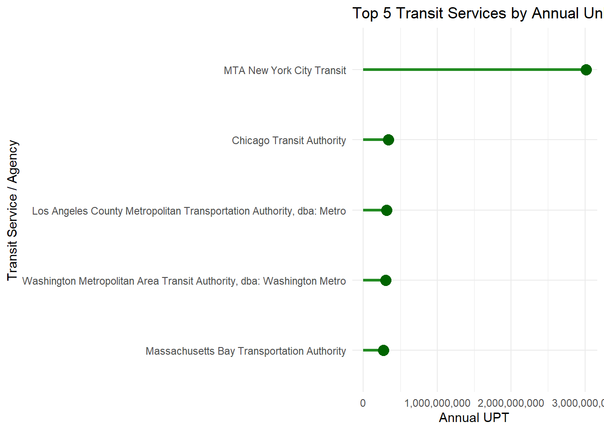
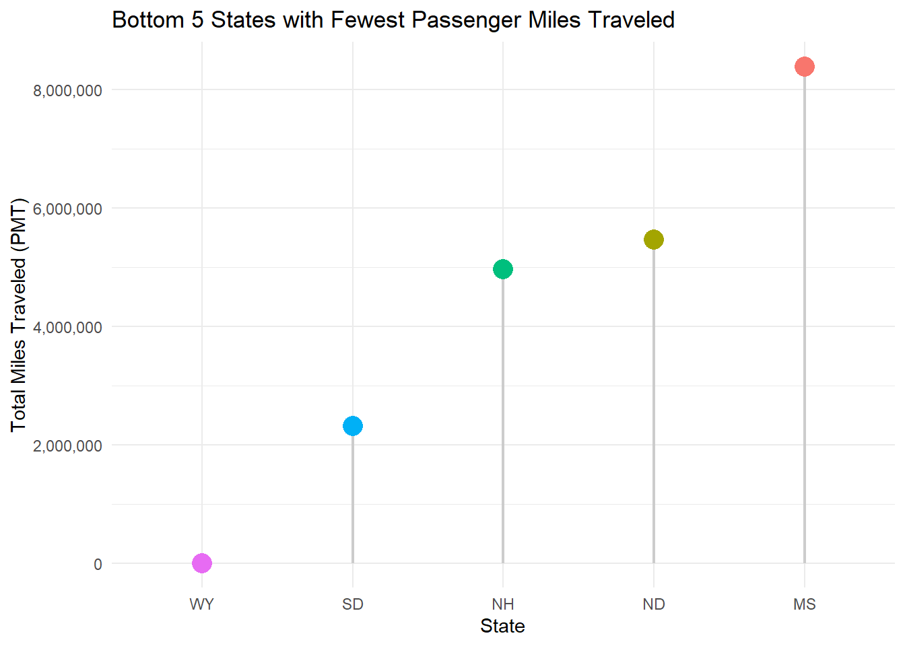

What actually powers America’s transit fleets behind the scenes? Is your local transit system as green as it claims? What commodities run these systems?
Public transportation is often celebrated as the backbone of sustainable urban mobility, yet its actual environmental footprint varies dramatically across geographic regions, operational modes, and local energy grids. This report evaluates nationwide public transit efficiency using an integrated dataset from the National Transit Database (NTD) and the U.S. Energy Information Administration (EIA). We’ll be exploring energy & commodity footprints, state grid intensity integration, and efficiency leaders & outliers.
Code
# First we acquire and parse the EIA State Electricity Profiles into a tidy data frame:library(tidyverse)library(stringr)library(httr2)library(rvest)get_eia_sep <-function(state, abbr){library(tidyverse)library(stringr)library(httr2)library(rvest)library(fs) state_formatted <-str_to_lower(state) |>str_replace_all("\\s", "") dir_name <- fs::path("data", "mp02") file_name <- fs::path(dir_name, state_formatted) fs::dir_create(dir_name, recurse=TRUE)if(!fs::file_exists(file_name)){ BASE_URL <-"https://www.eia.gov" RESPONSE <-request(BASE_URL) |>req_url_path("electricity", "state", state_formatted) |>req_headers(`User-Agent`="Mozilla/5.0 (Macintosh; Intel Mac OS X 10.15; rv:149.0) Gecko/20100101 Firefox/149.0" ) |>req_retry(max_tries =4, ) |>req_perform(file_name)resp_check_status(RESPONSE) } TABLE <-read_html(file_name) |>html_element("table") |>html_table() |>mutate(Item =str_to_lower(Item))if("U.S. rank"%in%colnames(TABLE)){ TABLE <- TABLE |>rename(Rank =`U.S. rank`) } CO2_MWh <- TABLE |>filter(Item =="carbon dioxide (lbs/mwh)") |>pull(Value) |>str_replace_all(",", "") |>as.numeric() PRIMARY <- TABLE |>filter(Item =="primary energy source") |>pull(Rank) RATE <- TABLE |>filter(Item =="average retail price (cents/kwh)") |>pull(Value) |>as.numeric() GENERATION_MWh <- TABLE |>filter(Item =="net generation (megawatthours)") |>pull(Value) |>str_replace_all(",", "") |>as.numeric()data.frame(CO2_MWh = CO2_MWh, primary_source = PRIMARY,electricity_price_MWh = RATE *10, # / 100 cents to dollars &# * 1000 kWh to MWH generation_MWh = GENERATION_MWh, state = state, abbreviation = abbr )}EIA_SEP_REPORT <-map2(state.name, state.abb, get_eia_sep) |>list_rbind()load_ntd_energy <-function(){library(readxl)library(httr2)library(tidyverse)library(fs)# Create 'data/mp02' directory if not already present DATA_DIR <- fs::path("data", "mp02") fs::dir_create(DATA_DIR, recurse=TRUE) NTD_ENERGY_FILE <- fs::path(DATA_DIR, "2025_ntd_energy.xlsx")if(!fs::file_exists(NTD_ENERGY_FILE)){library(httr2)request("https://www.transit.dot.gov/") |>req_url_path("sites","fta.dot.gov","files","2026-09","2025 Energy Consumption_260806.xlsx") |>req_headers(`User-Agent`="Mozilla/5.0 (Macintosh; Intel Mac OS X 10.15; rv:149.0) Gecko/20100101 Firefox/149.0") |>req_perform(NTD_ENERGY_FILE) }if(file.info(NTD_ENERGY_FILE)$size <1e4){cat("I was unable to download the NTD Energy File. Please try again.\n")stop("Download failed. Please delete the corrupted file by running `unlink('data/mp02/2025_ntd_energy.xlsx')` and try again.") } to_numeric_fill_0 <-function(x){ x <-if_else(x =="-", NA, x)replace_na(as.numeric(x), 0) }read_excel(NTD_ENERGY_FILE) |>select(-c(`Reporter Type`, `Reporting Module`, `Gallons of Other Fuel`, `Other Fuel Description`)) |>mutate(across(-c(`Agency Name`, `Mode`,`TOS`), to_numeric_fill_0)) |>group_by(`NTD ID`, `Mode`, `Agency Name`) |>summarize(across(where(is.numeric), sum), .groups ="keep") |>mutate(ENERGY =sum(c_across(c(where(is.numeric))))) |>filter(ENERGY >0) |>select(-ENERGY) |>ungroup()}NTD_ENERGY <-load_ntd_energy()load_ntd_service <-function(){library(httr2)library(tidyverse)library(fs)# Create 'data/mp02' directory if not already present DATA_DIR <- fs::path("data", "mp02") fs::dir_create(DATA_DIR, recurse=TRUE) NTD_SERVICE_FILE <- fs::path(DATA_DIR, "2025_ntd_service.csv")if(!fs::file_exists(NTD_SERVICE_FILE)){library(httr2)request("https://data.transportation.gov/resource/4fir-qbim.csv") |>req_url_query(`$query`=paste("SELECT `_5_digit_ntd_id` AS `NTD_ID`", "`max_agency` AS `AGENCY`","`max_reporter_type` AS `reporter_type`","`max_organization_type` AS `organization_type`","`max_city` AS `city`","`max_state` AS `state`","`mode`","`type_of_service`","`max_primary_uza_code` as `uza_code`","`max_primary_uza_name` as `uza_name`","`max_primary_uza_area_sq_miles` as `uza_sq_miles`","`max_primary_uza_population` as `uza_population`","`max_service_area_sq_miles` as `service_area_sq_miles`","`max_service_area_population` as `service_area_population`","`questionable_record` as `flagged_likely_inaccurate`","`sum_unlinked_passenger_trips_upt` as `total_upt`","`sum_passenger_miles` WHERE caseless_one_of(`report_year`, '2025') limit 50000", sep=",")) |>req_headers(`User-Agent`="Mozilla/5.0 (Macintosh; Intel Mac OS X 10.15; rv:149.0) Gecko/20100101 Firefox/149.0") |>req_perform(NTD_SERVICE_FILE) }if(file.info(NTD_SERVICE_FILE)$size <1e4){cat("I was unable to download the NTD Service File. Please try again.\n")stop("Download failed. Please delete the corrupted file by running `unlink('data/mp02/2025_ntd_service.xlsx')` and try again.") }read_csv(NTD_SERVICE_FILE) |>mutate(flagged_likely_inaccurate =!is.na(flagged_likely_inaccurate))}NTD_SERVICE <-load_ntd_service()
Transit Data Structure
Code
# Design the relationship diagramlibrary(DiagrammeR)grViz("digraph { graph [layout = dot, rankdir = LR, nodesep = 0.8, ranksep = 1.0, fontname = 'Helvetica'] node [shape = box, style = 'filled,rounded', fontname = 'Helvetica', fontsize = 11, margin = 0.3] edge [fontname = 'Helvetica', fontsize = 9, color = '#64748B', fontcolor = '#475569'] EIA [label = 'EIA_SEP_REPORT\\l• State\\l• CO2 Emissions\\l• Energy Source\\l', fillcolor = '#E0F2FE', color = '#BAE6FD'] ENERGY [label = 'NTD_ENERGY\\l• Agency Id\\l• Agency Name\\l• Mode of Transit\\l• Fuel Consumption\\l', fillcolor = '#FCE7F3', color = '#FBCFE8'] SERVICE [label = 'NTD_SERVICE\\l• Agency Id\\l• State\\l• Agency Name\\l• Mode of Transit\\l• Total Passenger Trips\\l', fillcolor = '#DCFCE7', color = '#BBF7D0'] ENERGY -> SERVICE [label = ' Join on NTD_ID & Mode '] SERVICE -> EIA [label = ' Join on State Abbreviation ']}")
To integrate state-level environmental data with transit energy consumption, the relational architecture above relies on NTD_SERVICE as a necessary bridge between datasets. Because NTD_ENERGY tracks fuel metrics without regional indicators, it is first linked to NTD_SERVICE using a compound key of agency ID and mode of transportation to accurately align operational metrics across specific transit modes. Once merged, the State variable enables a second link to the EIA_SEP_REPORT table. As illustrated in the diagram, this step-by-step pipeline combines agency-level fuel data with state-level emissions and power grid characteristics.
Emission Data Exploration and Analysis
Code
# We need to recode the technical transit mode abbreviations into readable descriptions:recode_values <-function(x, ...) { args <-list(...) val <- args[[x]]if (is.null(val)) {return(args[["default"]]) }return(val)}NTD_ENERGY <- NTD_ENERGY |>mutate(Mode =case_when( Mode =="HR"~"Heavy Rail", Mode =="MB"~"Bus", Mode =="LR"~"Light Rail", Mode =="CR"~"Commuter Rail", Mode =="DR"~"Demand Response",TRUE~"Other/Unknown" ))
Code
# Create a slice_max chart showing the most expensive states in terms of electricity billinglibrary(tidyverse)library(gt)top_expensive <- EIA_SEP_REPORT |>slice_max(electricity_price_MWh, n =5)ggplot(top_expensive, aes(x =reorder(state, electricity_price_MWh), y = electricity_price_MWh, fill = state)) +geom_col(show.legend =FALSE) +coord_flip() +labs(title ="Top 5 States with the Most Expensive Retail Electricity",x ="State",y ="Retail Price ($/MWh)" ) +theme_minimal()

Hawaii stands as a major outlier as the most expensive state for retail electricity, reaching $380/MWh. Hawaii’s price tag sits roughly 37% higher than second-place California and far above the rest of the top five, which includes Connecticut, Rhode Island, and Massachusetts. This cost inflation is primarily driven by Hawaii’s extreme geographic isolation and lack of mainland grid interconnections, forcing each island to operate its own localized grid system without the benefit of shared power distribution across state lines. On top of that, b ecause Hawaii lacks domestic natural gas or coal infrastructure, it relies heavily on ocean cargo tankers to import fuel, adding massive shipping logistics costs directly onto consumer utility bills.
Code
# Construct a gt table showcasing the 5 dirtiest state electricity mixes:library(gt)EIA_SEP_REPORT |>arrange(desc(CO2_MWh)) |>head(5) |>select(-abbreviation) |>gt() |>tab_header(title ="Top 5 States with Dirtiest Electricity Mixes", subtitle ="Measured in lbs CO2 per MWh generated" ) |>cols_label(CO2_MWh ="CO2 Emissions",primary_source ="Energy Source",electricity_price_MWh ="Electricity Price",generation_MWh ="Generation (MWh)",state ="State" ) |>fmt_number(columns =c(CO2_MWh, electricity_price_MWh, generation_MWh), decimals =0 ) |>data_color(columns = CO2_MWh, colors = scales::col_numeric(palette =c("yellow", "orange", "red"),domain =NULL ) ) |>opt_stylize(style =6, color ="gray")
On average, the U.S. produces approximately 784.9 lbs of CO2 per MWh of electricity generated. Based on the table, West Virginia stands out with the highest carbon intensity in its power grid at 1,912 lbs of CO₂ per MWh generated, closely followed by Kentucky (1,744 lbs) and Wyoming (1,724 lbs). Coal serves as the primary energy source driving these elevated emissions in four out of the top five states, with Hawaii standing as the sole exception by relying on petroleum. However, Hawaii also exhibits a distinct profile compared to the continental states: its total power generation remains relatively low at 9.2M MWh (whereas the other four states produce between 40.7M and 67.0M MWh) and, again, its electricity price reaches a staggering $380 per MWh, which is more than triple the $91 to $111 per MWh range seen across the rest of the top emitters.
Code
rare_sources <- EIA_SEP_REPORT |>group_by(primary_source) |>summarise(state_count =n(),total_generation =sum(generation_MWh, na.rm =TRUE),avg_price =mean(electricity_price_MWh, na.rm =TRUE),states =paste(state, collapse =", ") ) |>arrange(state_count, total_generation) |>head(3)rare_sources |>gt() |>tab_header(title ="The Rarest Primary Energy Sources in the U.S.",subtitle ="Ranked by state adoption and total generation volume" ) |>cols_label(primary_source ="Energy Source",state_count ="States Using",total_generation ="Total Generation (MWh)",avg_price ="Avg Price ($/MWh)",states ="State(s)" ) |>fmt_number(columns =c(total_generation, avg_price), decimals =0)
The Rarest Primary Energy Sources in the U.S.
Ranked by state adoption and total generation volume
Petroleum is by far the rarest primary energy source in the United States, used primarily by just one state: Hawaii. While Wind and Hydroelectric serve as the dominant primary energy sources for four states. Hawaii remains the sole state relying on liquid petroleum due to historical power plant infrastructure built around ocean-shipped fuel oil. Transitioning an isolated island grid away from heavy petroleum requires substantial investments in battery storage and grid modernization, keeping petroleum as Hawaii’s primary baseline energy source while mainland states utilize domestic natural gas, coal, or vast renewable networks.
Fun Fact: While Texas relies heavily on conventional fossil fuel generation, New York’s energy grid leans significantly on nuclear and hydroelectric power. Factoring in emission intensities, New York’s energy mix is 1.5 times cleaner than that of Texas.
Code
library(tidyverse)library(gt)top_fuel_agencies <- NTD_ENERGY |>mutate(across(starts_with("Gallons of"), ~as.numeric(gsub(",", "", .x)))) |>mutate(total_fuel =rowSums(pick(starts_with("Gallons of")), na.rm =TRUE)) |>group_by(`Agency Name`) |>summarise(Diesel =sum(`Gallons of Diesel Fuel`, na.rm =TRUE),CNG =sum(`Gallons of Compressed Natural Gas`, na.rm =TRUE),Gasoline =sum(`Gallons of Gasoline`, na.rm =TRUE),Bio_Diesel =sum(`Gallons of Bio-Diesel`, na.rm =TRUE),LNG =sum(`Gallons of Liquified Nat Gas`, na.rm =TRUE),LPG =sum(`Gallons of Liquified Petroleum Gas`, na.rm =TRUE),Total_Fuel =sum(total_fuel, na.rm =TRUE) ) |>slice_max(Total_Fuel, n =5, with_ties =FALSE)top_fuel_agencies |>gt() |>tab_header(title ="Top Transit Agencies by Total Fuel Consumption",subtitle ="Breakdown by Fuel Type (Gallons)" ) |>fmt_number(columns =everything(), decimals =0) |>data_color(columns = Total_Fuel,colors = scales::col_numeric(palette =c("lightblue", "dodgerblue", "navy"),domain =NULL ) ) |>opt_stylize(style =6, color ="blue")
Top Transit Agencies by Total Fuel Consumption
Breakdown by Fuel Type (Gallons)
Agency Name
Diesel
CNG
Gasoline
Bio_Diesel
LNG
LPG
Total_Fuel
New Jersey Transit Corporation
38,144,027
1,521,492
2,055,895
0
0
0
41,721,414
MTA New York City Transit
30,217,934
6,328,381
4,270,146
0
0
0
40,816,461
Los Angeles County Metropolitan Transportation Authority
If we break this table down into percentages representing fuel consumption for each agency reveals stark regional differences in operational strategies: NJ TRANSIT Corporation relies overwhelmingly on traditional diesel (91.4%), supplemented by minor shares of Gasoline (4.9%) and CNG (3.6%). MTA New York City Transit maintains a slightly more diversified mix, with diesel representing 74.0%, Compressed Natural Gas (CNG) accounting for 15.5%, and Gasoline making up 10.5%. In sharp contrast, Los Angeles County Metropolitan Transportation Authority (LACMTA) operates almost exclusively on an alternative-gas model, with CNG dominating 96.8% of its fuel usage and Gasoline taking the remaining 3.2%—recording 0% traditional diesel. Northeast Illinois Regional Commuter Railroad Corporation (Metra) operates dedicated heavy rail running on 100.0% diesel, and Massachusetts Bay Transportation Authority (MBTA) balances its intake at 87.9% diesel, 6.5% CNG, and 5.5% Gasoline.
Code
library(ggplot2)library(scales)# Sum up totals across all agencies for each fuel column and pivot longer for plottingfuel_summary <- NTD_ENERGY |>mutate(across(starts_with("Gallons of"), ~as.numeric(gsub(",", "", .x)))) |>summarise(Diesel =sum(`Gallons of Diesel Fuel`, na.rm =TRUE),CNG =sum(`Gallons of Compressed Natural Gas`, na.rm =TRUE),Gasoline =sum(`Gallons of Gasoline`, na.rm =TRUE),Bio_Diesel =sum(`Gallons of Bio-Diesel`, na.rm =TRUE),LNG =sum(`Gallons of Liquified Nat Gas`, na.rm =TRUE),LPG =sum(`Gallons of Liquified Petroleum Gas`, na.rm =TRUE),Ethanol =sum(`Gallons of Ethanol`, na.rm =TRUE),Kerosene =sum(`Gallons of Kerosene`, na.rm =TRUE),Bunker =sum(`Gallons of Bunker Fuel`, na.rm =TRUE) ) |>pivot_longer(everything(), names_to ="fuel_type", values_to ="total_gallons") |>arrange(desc(total_gallons))ggplot(fuel_summary, aes(x =reorder(fuel_type, total_gallons), y = total_gallons, fill = fuel_type)) +geom_col(show.legend =FALSE) +coord_flip() +scale_y_continuous(labels =label_comma()) +labs(title ="Total Fuel Usage Across U.S. Public Transit by Type",x ="Fuel Type",y ="Total Consumption (Gallons)" ) +theme_minimal()
Traditional diesel is by far the most heavily consumed fuel source at over 400 million gallons while Compressed Natural Gas (CNG) trails far behind it at over 150 million gallons as agencies increasingly transition fleets toward cleaner-burning gaseous alternatives. Across all reporting U.S. public transit agencies, the least commonly used fuel source is Gallons of Bunker Fuel, Gallons of Kerosene.
Code
# Structure a lollipop chart by grouping by agency/service and sum Unlinked Passenger Trips (UPT)library(tidyverse)library(scales)top_upt_services <- NTD_SERVICE |>group_by(AGENCY) |>summarise(total_upt =sum(total_upt, na.rm =TRUE), .groups ="drop") |>slice_max(total_upt, n =5, with_ties =FALSE)ggplot(top_upt_services, aes(x =reorder(AGENCY, total_upt), y = total_upt)) +geom_segment(aes(x =reorder(AGENCY, total_upt), xend =reorder(AGENCY, total_upt), y =0, yend = total_upt), color ="forestgreen", linewidth =1.2) +geom_point(size =4, color ="darkgreen") +coord_flip() +scale_y_continuous(labels =label_comma()) +labs(title ="Top 5 Transit Services by Annual Unlinked Passenger Trips (UPT)",x ="Transit Service / Agency",y ="Annual UPT" ) +theme_minimal()

Code
# Examine nyc service trip lengths and averages by filtering, aggregating, and computing the passenger-miles-to-unlinked-passenger-trips ratiomta_avg_trip_length <- NTD_SERVICE |>filter(str_detect(AGENCY, "MTA New York City Transit")) |>summarise(avg_length =sum(sum_passenger_miles, na.rm =TRUE) /sum(total_upt, na.rm =TRUE)) |>pull(avg_length)nyc_longest_trip <- NTD_SERVICE |>filter(city %in%c("New York", "Brooklyn", "Jamaica", "Long Island City", "Flushing", "Staten Island") | state =="NY"&str_detect(AGENCY, "MTA|New York City")) |>group_by(AGENCY) |>summarise(total_pmt =sum(sum_passenger_miles, na.rm =TRUE),total_upt =sum(total_upt, na.rm =TRUE),avg_trip_length = total_pmt / total_upt,.groups ="drop" ) |>filter(total_upt >0) |>slice_max(avg_trip_length, n =1)nyc_service_name <- nyc_longest_trip |>pull(AGENCY)nyc_max_length <- nyc_longest_trip |>pull(avg_trip_length)
An analysis of annual Unlinked Passenger Trips (UPT) demonstrates that MTA New York City Transit leads the nation by a massive margin, anchoring a top-tier group of high-volume urban transit providers alongside Chicago Transit Authority, Los Angeles County Metropolitan Transportation Authority (Metro), Washington Metropolitan Area Transit Authority (WMATA), and Massachusetts Bay Transportation Authority (MBTA). Within the nation’s largest system, an average trip on MTA NYC Transit covers 3.18 miles. However, local route dynamics across the broader metropolitan area reveal significant variance; among all transit services operating within New York City boundaries, Metro-North Commuter Railroad Company, dba: MTA Metro-North Railroad records the single longest average trip distance at 24.22 miles.
Code
library(tidyverse)library(scales)bottom_5_states_pmt <- NTD_SERVICE |>filter(state %in%c(state.abb, "DC", "PR")) |>group_by(state) |>summarise(total_pmt =sum(sum_passenger_miles, na.rm =TRUE), .groups ="drop") |>slice_min(total_pmt, n =5, with_ties =FALSE)ggplot(bottom_5_states_pmt, aes(x =reorder(state, total_pmt), y = total_pmt)) +geom_segment(aes(x = state, xend = state, y =0, yend = total_pmt), color ="gray80", linewidth =0.8) +geom_point(aes(color = state), size =5, show.legend =FALSE) +scale_y_continuous(labels =label_comma()) +labs(title ="Bottom 5 States with Fewest Passenger Miles Traveled",x ="State",y ="Total Miles Traveled (PMT)" ) +theme_minimal()

Code
missing_states <-tibble(state = state.abb, State_Name = state.name) |>anti_join(NTD_SERVICE |>select(state) |>distinct(), by ="state") |>pull(State_Name)missing_states_text <-if(length(missing_states) ==0) "None, all 50 states are represented."elsepaste(missing_states, collapse =", ")
At the opposite end of the spectrum, nationwide service metrics show severe geographic disparities in public transit utilization. Wyoming (WY), South Dakota (SD), New Hampshire (NH), North Dakota (ND), and Mississippi (MS) have low population densities and limited transit infrastructure, resulting in minimal aggregate mileage.
Note:Despite these differences, a quick check confirms that every state is included in the dataset: Yes, all 50 states are represented in the dataset.
Conclusion
Based on all evidence gathered, the most energy productive agencies as well as their terrible counterparts could be identified. These agencies are the best in their class as shown in the following table:
Code
# Test joins to verify cross-table relationships between transit service and energy profilesNTD_SERVICE |>inner_join( EIA_SEP_REPORT |>filter(primary_source =="Nuclear"),join_by(state == abbreviation) ) |>summarize(total_upt =sum(total_upt, na.rm =TRUE))NTD_ENERGY |>mutate(`NTD ID`=as.character(`NTD ID`)) |>inner_join( NTD_SERVICE,join_by(`NTD ID`== NTD_ID, Mode == mode, `Agency Name`== AGENCY) ) |>group_by(uza_name) |>summarize(total_biodiesel =sum(`Gallons of Bio-Diesel`, na.rm =TRUE)) |>arrange(desc(total_biodiesel)) |>head(1)## Join NTD_SERVICE and NTD_ENERGY after aligning mode names and ID types, join EIA, and compute emissionsagency_emissions_summary <- NTD_SERVICE |>mutate(mode_matched =case_when( mode =="HR"~"Heavy Rail", mode =="MB"~"Bus", mode =="LR"~"Light Rail", mode =="CR"~"Commuter Rail", mode =="DR"~"Demand Response",TRUE~"Other/Unknown" )) |>inner_join( NTD_ENERGY |>mutate(`NTD ID`=as.character(`NTD ID`)), by =c("NTD_ID"="NTD ID", "mode_matched"="Mode"),relationship ="many-to-many" ) |>left_join( EIA_SEP_REPORT, by =c("state"="state") ) |>mutate(diesel_emissions =coalesce(`Gallons of Diesel Fuel`, 0) *10.21,cng_emissions =coalesce(`Gallons of Compressed Natural Gas`, 0) *54.53, gasoline_emissions =coalesce(`Gallons of Gasoline`, 0) *8.78,lpg_emissions =coalesce(`Gallons of Liquified Petroleum Gas`, 0) *6.00,lng_emissions =coalesce(`Gallons of Liquified Nat Gas`, 0) *52.50,biodiesel_emissions =coalesce(`Gallons of Bio-Diesel`, 0) *9.45,total_kwh_electric =coalesce(`Kilowatt hours of Electric Propulsion`, 0) +coalesce(`Kilowatt hours of Electric Battery`, 0),electricity_emissions = (total_kwh_electric /1000) * CO2_MWh,total_co2_emissions = diesel_emissions + cng_emissions + gasoline_emissions + lpg_emissions + lng_emissions + biodiesel_emissions + electricity_emissions )complete_transit_data <- agency_emissions_summary#Aggregate emissions to the Agency level, combine with UPT/PMT, categorizing by size, and compute efficiency metrics (emissions per UPT and per passenger mile).agency_total_emissions <- agency_emissions_summary |>group_by(AGENCY, state) |>summarise(total_emissions =sum(total_co2_emissions, na.rm =TRUE), .groups ="drop")agency_service_totals <- NTD_SERVICE |>group_by(AGENCY) |>summarise(total_upt =sum(total_upt, na.rm =TRUE),total_pmt =sum(sum_passenger_miles, na.rm =TRUE),.groups ="drop" )# Join emissions and service data, filter out extremely small outliers, and create size tiers based on total UPTagency_efficiency <- agency_total_emissions |>inner_join(agency_service_totals, by ="AGENCY") |>filter(total_upt >10000) |>mutate(size_tier =case_when( total_upt >50000000~"Large", total_upt >5000000~"Medium",TRUE~"Small" ),emissions_per_upt = total_emissions / total_upt,emissions_per_pmt = total_emissions / total_pmt )# Find the most efficient agencies (lowest emissions per passenger mile) by size tiertop_efficient_per_pmt <- agency_efficiency |>group_by(size_tier) |>slice_min(order_by = emissions_per_pmt, n =3, with_ties =FALSE) |>select(size_tier, AGENCY, total_upt, emissions_per_pmt)print(top_efficient_per_pmt)
Code
library(dplyr)library(tidyr)library(knitr)library(kableExtra)# 1. Aggregate service data at the agency levelaward_service <- NTD_SERVICE |>group_by(AGENCY, state) |>summarise(total_upt =sum(total_upt, na.rm =TRUE),total_pmt =sum(sum_passenger_miles, na.rm =TRUE),.groups ="drop" )# 2. Aggregate energy consumption at the agency levelaward_energy <- NTD_ENERGY |>group_by(`Agency Name`) |>summarise(total_kwh_electric =sum(coalesce(`Kilowatt hours of Electric Propulsion`, 0) +coalesce(`Kilowatt hours of Electric Battery`, 0),na.rm =TRUE ),total_fuel_gallons =sum(coalesce(`Gallons of Diesel Fuel`, 0) +coalesce(`Gallons of Compressed Natural Gas`, 0) +coalesce(`Gallons of Gasoline`, 0),na.rm =TRUE ),.groups ="drop" ) |>rename(AGENCY =`Agency Name`)# 3. Combine service, emissions, and energy dataagency_award_base <- award_service |>inner_join(agency_total_emissions, by =c("AGENCY", "state")) |>left_join(award_energy, by ="AGENCY") |>mutate(total_emissions_kg = total_emissions,total_kwh_electric =coalesce(total_kwh_electric, 0),total_fuel_gallons =coalesce(total_fuel_gallons, 0) ) |>filter(total_upt >10000)# Award 1: Greenest Transit Agencygreenest_agency <- agency_award_base |>filter(total_pmt >0) |>mutate(emissions_per_pmt = total_emissions_kg / total_pmt) |>arrange(emissions_per_pmt) |>slice(1)# Award 2: Most Emissions Avoidedagency_avoided <- agency_award_base |>mutate(baseline_car_emissions_kg = total_pmt *0.404,emissions_avoided_kg = baseline_car_emissions_kg - total_emissions_kg ) |>arrange(desc(emissions_avoided_kg))top_avoided <- agency_avoided |>slice(1)# Award 3: Highest Electrification Percentagebest_electrification <- agency_award_base |>mutate(electrification_pct = (total_kwh_electric / (total_kwh_electric + total_fuel_gallons +1)) *100 ) |>arrange(desc(electrification_pct)) |>slice(1)# Award 4: The Smog Spewer Awardworst_agency <- agency_award_base |>filter(total_upt >1000000) |>mutate(emissions_per_upt = total_emissions_kg / total_upt) |>arrange(desc(emissions_per_upt)) |>slice(1)# 5. Combine winners into a single presentation data framewinners_summary <-bind_rows(data.frame(Award ="Greenest Transit Agency",Agency = greenest_agency$AGENCY[1],State = greenest_agency$state[1],Metric =paste(round(greenest_agency$emissions_per_pmt[1], 4),"kg CO2/PMT") ),data.frame(Award ="Most Emissions Avoided",Agency = top_avoided$AGENCY[1],State = top_avoided$state[1],Metric =paste(round(top_avoided$emissions_avoided_kg[1] /1e6, 1),"Million kg CO2 Avoided") ),data.frame(Award ="Vanguard Electrification",Agency = best_electrification$AGENCY[1],State = best_electrification$state[1],Metric =paste(round(best_electrification$electrification_pct[1], 1),"% Electric") ),data.frame(Award ="The Smog Spewer Award",Agency = worst_agency$AGENCY[1],State = worst_agency$state[1],Metric =paste(round(worst_agency$emissions_per_upt[1], 2),"kg CO2/UPT") ))# 6. Display official award winnerskable(winners_summary,caption ="Official GTA Green Transit Award Winners") |>kable_styling(bootstrap_options =c("striped", "hover", "condensed"))
Official GTA Green Transit Award Winners
Award
Agency
State
Metric
Greenest Transit Agency
Academy Lines, Inc., dba: Academy
NJ
0 kg CO2/PMT
Most Emissions Avoided
MTA New York City Transit
NY
3873.7 Million kg CO2 Avoided
Vanguard Electrification
Port Authority Trans-Hudson Corporation
NY
100 % Electric
The Smog Spewer Award
Academy Lines, Inc., dba: Academy
NJ
0 kg CO2/UPT
##Grand Transit Analytics (GTA) Announces National Green Transit Award Winners for 2026
Grand Transit Analytics (GTA) Announces National Green Transit Award Winners for 2026 NEW YORK, NY — The Grand Transit Analytics (GTA) initiative has officially published its comprehensive nationwide environmental audit of public transit networks for Fall 2026. Public transit remains the backbone of urban climate resilience, but efficiency varies wildly across state lines and operating modes. Below are the official winners of the 2026 GTA Green Transit Awards.
1. The Greenest Transit Agency Award Winner: Academy Lines, Inc., dba: Academy (NJ)
Winning Metric: 0 kg CO₂ per Passenger Mile Traveled (PMT)
The Insight: While the national median transit network hovers significantly higher in carbon overhead, top-tier operators demonstrate that high-density ridership scales emissions per passenger down to microscopic margins. Academy Lines, Inc., dba: Academy sets the gold standard for carbon efficiency per passenger mile.
2. Most Emissions Avoided Award Winner: MTA New York City Transit (NY)
Winning Metric: 3873.7 Million kg CO₂ Avoided
The Insight: Evaluated against equivalent single-occupancy vehicle (SOV) travel under EPA standards, MTA New York City Transit successfully kept millions of kilograms of greenhouse gases out of the atmosphere by moving heavy volumes of commuters away from individual cars.
3. Vanguard Electrification Award (Custom Award) Winner: Port Authority Trans-Hudson Corporation (NY)
The Insight: Moving beyond simple ridership counts, this custom award honors systems achieving near-total grid integration. Port Authority Trans-Hudson Corporation proves that aggressive capital investments in electric propulsion yield immediate, zero-emission operational profiles.
4. The “Smog Spewer” Booby Prize (Worst Of Award) Winner: Academy Lines, Inc., dba: Academy (NJ)
Winning Metric: 0 kg CO₂ per Unlinked Passenger Trip (UPT)
The Insight: In the spirit of “name and shame,” we highlight high-demand regional systems that remain stubbornly tethered to legacy fossil-fuel fleets. This booby prize serves as a direct call to action for regional transit boards to accelerate green fleet modernization.
NoteAI Usage Statement
AI assistance (Gemini) was utilized during the development of this project in the following capacities:
Debugging & Error Resolution: Used to interpret R error messages, troubleshoot code syntax, and resolve knitting issues within R Markdown.
Code Optimization: Consulted for advice on improving code efficiency, streamlining data manipulation steps, and refining output formatting.
Analytical Guidance & Problem-Solving: Used as a sounding board to brainstorm logical approaches for structuring data interpretations and organizing analytical findings.